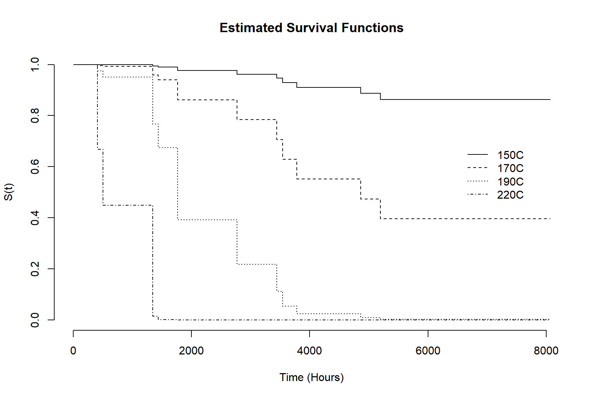
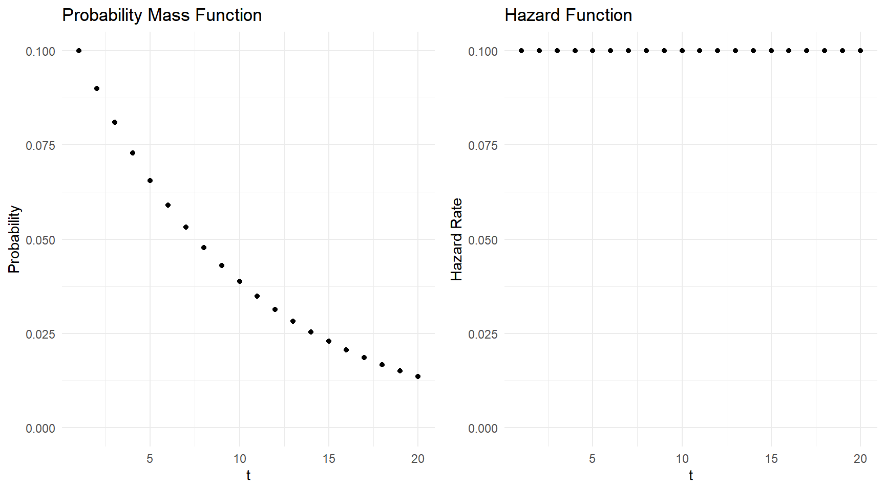
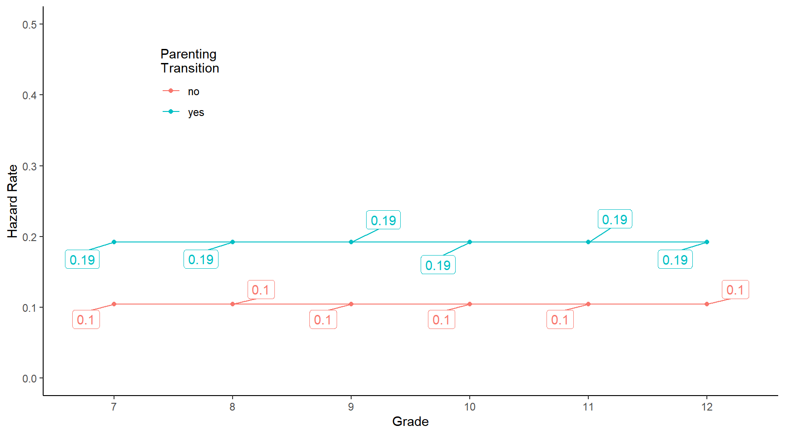
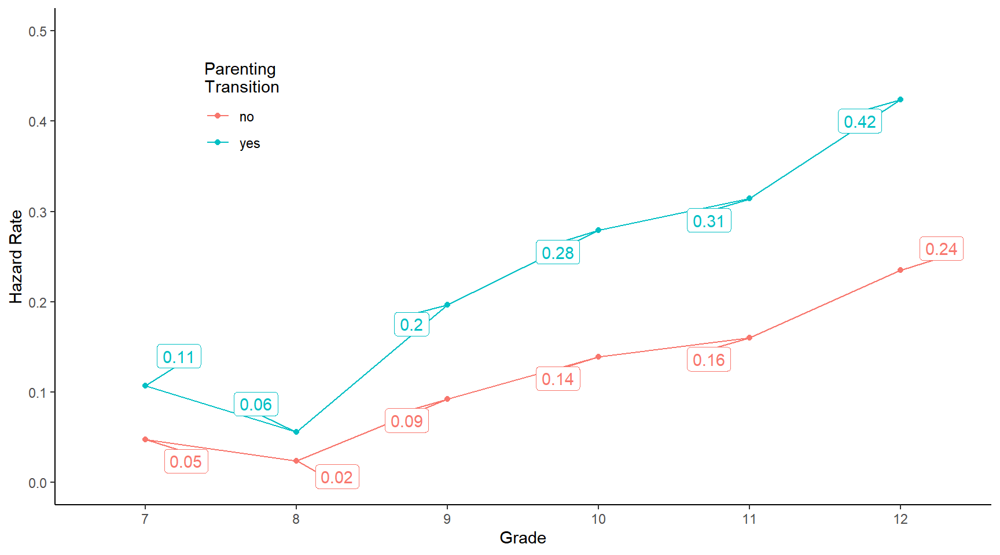

Wednesday, Apr 13
You can also download a PDF copy of this lecture.
Proportional Hazards and the Survival Function
Let \(h_0(t)\) and \(S_0(t)\) be the “baseline” hazard and survival functions (i.e., the function when all \(x_{j} = 0\)). If the proportional hazards assumption hold so that \[ h(t) = h_0(t)e^{\beta_1 x_{1}}e^{\beta_2 x_{2}} \cdots e^{\beta_k x_{k}}, \] then it can be shown that \[ S(t) = S_0(t)^{\eta} \ \ \text{where} \ \ \eta = e^{\beta_1 x_{1}}e^{\beta_2 x_{2}} \cdots e^{\beta_k x_{k}}. \] Thus the effect of increasing \(x_{j}\) in a proportional hazards model can be summarized as follows.
If \(\beta_j > 0\) then \(S(t)\) will be decreased as \(x_{j}\) increases, as will \(E(T)\).
If \(\beta_j < 0\) then \(S(t)\) will be increased as \(x_{j}\) increases, as will \(E(T)\).
Note: The signs of the \(\beta_j\) parameters will be opposite of what they are in a equivalent accelerated failure time model.
Example: Consider again a proportional hazards model
for the motors data.
library(flexsurv)
m <- flexsurvreg(Surv(time, cens) ~ temp, dist = "weibullPH", data = MASS::motors)
print(m)Call:
flexsurvreg(formula = Surv(time, cens) ~ temp, data = MASS::motors,
dist = "weibullPH")
Estimates:
data mean est L95% U95% se exp(est) L95% U95%
shape NA 2.99e+00 1.97e+00 4.55e+00 6.40e-01 NA NA NA
scale NA 6.34e-22 1.79e-30 2.24e-13 6.37e-21 NA NA NA
temp 1.82e+02 1.36e-01 8.04e-02 1.91e-01 2.81e-02 1.15e+00 1.08e+00 1.21e+00
N = 40, Events: 17, Censored: 23
Total time at risk: 140654
Log-likelihood = -147.4, df = 3
AIC = 300.7
Semi-Parametric (Cox) Proportional Hazards Model
A proportional hazards model assumes \[ h_i(t) = h_0(t)e^{\beta_1 x_{i1}}e^{\beta_2 x_{i2}} \cdots e^{\beta_k x_{ik}}, \] where again \(h_0(t)\) is the “baseline” proportional hazards function. The functional form of \(h_0(t)\) and thus \(h_i(t)\) depends on the distribution of \(T_i\).
A parametric proportional hazards model assumes a particular distribution and functional form of \(h_0(t)\).
The semi-parametric proportional hazards model does not assume a particular distribution or functional form for \(h_0(t)\).
The marginal or partial likelihood function permits maximum likelihood estimation of \(\beta_1, \beta_2, \dots, \beta_k\) without assuming a particular distribution. It is based only on the rank order of the times.
Comments about semi-parametric proportional hazards models.
Right-censoring can be easily handled with this model. But other types of censoring require additional assumptions.
Estimation of hazard and survival functions relies on a semi-parametric approach.
Stratification can be used when hazard functions are proportional within but not between strata.
The function coxph from the survival
package will estimate a Cox proportional hazards model.
Example: Consider a Cox proportional hazards model
for the motors data.
library(survival) # for coxph function
m <- coxph(Surv(time, cens) ~ temp, data = MASS::motors)
summary(m)Call:
coxph(formula = Surv(time, cens) ~ temp, data = MASS::motors)
n= 40, number of events= 17
coef exp(coef) se(coef) z Pr(>|z|)
temp 0.0919 1.0962 0.0274 3.36 0.00079 ***
---
Signif. codes: 0 '***' 0.001 '**' 0.01 '*' 0.05 '.' 0.1 ' ' 1
exp(coef) exp(-coef) lower .95 upper .95
temp 1.1 0.912 1.04 1.16
Concordance= 0.84 (se = 0.035 )
Likelihood ratio test= 25.6 on 1 df, p=4e-07
Wald test = 11.3 on 1 df, p=8e-04
Score (logrank) test = 22.7 on 1 df, p=2e-06We can plot estimated survival functions from a coxph
model object.
d <- data.frame(temp = c(150,170,190,220))
# plot estimated survival functions
plot(survfit(m, newdata = d), bty = "n", lty = 1:4, xlab = "Time (Hours)", ylab = "S(t)")
# add a legend
legend(6500, 0.7, legend = c("150C", "170C", "190C", "220C"), lty = 1:4, bty = "n")
# add a title
title("Estimated Survival Functions")
A common non-parametric estimator of a survival function is the Kaplan-Meier estimator, but it is largely limited to cases where you have a categorical explanatory variable with multiple times observed per category.
Discrete Survival Time Models
Discrete survival time models treat time-to-event as a discrete random variable rather than a continuous random variable. This is done for one of two reasons.
Time is actually continuous, but we treat it as discrete for convenience/simplicity, or because the observations are interval-censored (with common intervals, e.g., week, month, year).
The “time” is actually a count of “attempts” of an event (e.g., number of cycles until pregnancy, number of times to take a test until it is passed, number of times a machine is run until it fails).
For discrete time, the probability density, survival, and hazard functions are analogous to what they are for continuous time, but simpler because all of them give probabilities.
The probability mass function is \(f(t) = P(T = t)\). This gives the probability that the event will happen at time \(t\).
The survival function is, as before, \(S(t) = P(T \ge t)\). This gives the probability that the event will happen at time \(t\) or later.
The hazard function is \(h(t) = P(T = t|T \ge t)\). This gives the probability that the event will happen at time \(t\) given that it has not yet happened (i.e., the probability that it will happen at time \(t\) given that the unit has “survived” to that point).
It is important to not confused the probability mass function which gives the probability that the event will happen at time \(t\), versus the hazard function which gives the probability that the event will happen at time \(t\) given that it has not yet happened.
Example: Suppose I have a fair ten-sided die. Let \(t\) be the number of rolls until I get one. The figures below show the probability mass and hazard function.

Technical Details: Note that \(f(t)\), \(S(t)\), and \(h(t)\) are related because \(h(t) = f(t)/S(t)\). Also we can define \(f(t)\) entirely in terms of \(h(t)\). Consider that if a unit survives to time \(t\), the probability that it will not survive past time \(t\) is \[ h(t) = P(T = t|T \ge t), \] and the probability that it will survive past time \(t\) is \[ 1 - h(t) = 1 - P(T = t|T \ge t) = P(T > t|T \ge t). \] So we can write \(f(t)\) in terms of \(h(t)\) as follows.
For observations that are not right-censored at time \(t\), \[\begin{align*} f(1) & = h(1), \\ f(2) & = [1 - h(1)]h(2), \\ f(3) & = [1 - h(1)][1 - h(2)]h(3), \\ f(4) & = [1 - h(1)][1 - h(2)][1 - h(3)]h(4), \\ f(5) & = [1 - h(1)][1 - h(2)][1 - h(3)][1 - h(4)]h(5), \end{align*}\] and so on. In general for non-censored discrete times \[ f(t) = \begin{cases} h(t), & \text{if $t = 1$}, \\ h(t)\prod_{j=1}^{t-1}[1-h(j)], & \text{if $t > 1$}, \end{cases} \] Note that \(1 - h(t) = 1 - P(T = t|T \ge t) = P(T > t|T \ge t)\).
For observations that are right-censored at time \(t\), \[\begin{align*} f(1) & = [1 - h(1)], \\ f(2) & = [1 - h(1)][1 - h(2)], \\ f(3) & = [1 - h(1)][1 - h(2)][1 - h(3)], \\ f(4) & = [1 - h(1)][1 - h(2)][1 - h(3)][1 - h(4)], \\ f(5) & = [1 - h(1)][1 - h(2)][1 - h(3)][1 - h(4)][1 - h(5)], \end{align*}\] and so on. In general for right-censored discrete times \[ f(t) = \prod_{j=1}^{t}[1-h(j)]. \] Note that \(1 - h(t) = 1 - P(T = t|T \ge t) = P(T > t|T \ge t)\).
Discrete Survival Models as Binary Regression Models
Discrete survival time models can be expressed as binary regression models. We can model the probability that a unit will not survive past time \(t\) given that it survived to time \(t\), or we can model the probability that it will survive past time given that it survived to time \(t\).
Suppose we code time-till-event with positive integers. For every
\(T\) we define a set of binary
responses such that if \(T=t\) then we
have \(t\) binary responses, \(Y_1, Y_2, \dots, Y_t\), such that \[
Y_t =
\begin{cases}
1, & \text{if the event occurs at time $t$ (i.e., $T = t$)}, \\
0, & \text{if the event occurs after time $t$ (i.e., $T >
t$)}.
\end{cases}
\]
Note that if \(T\) is right-censored
then we let \(T=t\) where \(t\) is the last time we know the event had
not failed, but \(Y_t = 0\).
Example: The observed event times are \(T = t\) where \(t\) = 1, 2, 3, 4, or 5. Then we define \(Y_1, Y_2, \dots, Y_5\) as follows.
| \(t\) | \(Y_1\) | \(Y_2\) | \(Y_3\) | \(Y_4\) | \(Y_5\) |
|---|---|---|---|---|---|
| 1 | 1 | ||||
| 2 | 0 | 1 | |||
| 3 | 0 | 0 | 1 | ||
| 4 | 0 | 0 | 0 | 1 | |
| 5 | 0 | 0 | 0 | 0 | 1 |
Example: \(T\) is censored such that \(T > t\) where \(t\) = 1, 2, 3, 4, or 5. Then we define \(Y_1, Y_2, \dots, Y_5\) as follows.
| \(t\) | \(Y_1\) | \(Y_2\) | \(Y_3\) | \(Y_4\) | \(Y_5\) |
|---|---|---|---|---|---|
| 1 | 0 | ||||
| 2 | 0 | 0 | |||
| 3 | 0 | 0 | 0 | ||
| 4 | 0 | 0 | 0 | 0 | |
| 5 | 0 | 0 | 0 | 0 | 0 |
Not: If time is discrete due to interval-censoring the maximum possible time does not need a binary variable.
Technical Details: The distribution of \(T\) can be stated in terms of the \(Y_t\). It follows that \(h(t) = P(Y_t = 1)\) and \(1-h(t) = 1 - P(Y_t = 1) = P(Y_t = 0)\), so if \(T\) is not censored then \[ f(t) = \begin{cases} P(Y_1 = 1), & \text{if $t = 1$}, \\ P(Y_t = 1)\prod_{j=1}^{t-1}P(Y_t = 0), & \text{if $t > 1$}, \end{cases} \] and if \(T\) is censored such that \(T > t\) then \[ f(t) = \prod_{j=1}^t P(Y_t = 0). \]
TLDR: Many discrete time survival models can be estimated as binary regression models (e.g., logistic regression) where the response variable is an indicator variable for if the event happened at a given time.
Example: Consider the following data from a study comparing mothers who smoke to those who do not with respect to the number of menstrual cycles until pregnancy.
library(trtools) # for the cycles data
p <- ggplot(cycles, aes(x = cycles, y = 1.0 * ..density..)) +
facet_wrap(~ mother) +
geom_histogram(binwidth = 1, center = 1,
color = "black", fill = grey(0.85)) +
scale_x_continuous(breaks = 1:13, labels = c(1:12,"13+")) +
labs(x = "Number of Cycles Until Pregnancy",
y = "Relative Frequency") + theme_minimal()
plot(p) Note: Using
Note: Using w * ..density.. computes the relative frequency
for the y aesthetic, where w is the bar
width.
It is important to note that all reported values of 13 cycles are actually right-censored and so represent 13 or more cycles. The observed censoring times are between 1 and 12 cycles, with all recorded cycles of 13 representing right-censored observations only known to be more than 12 cycles. We need to create an indicator variable for observed times and to change values of 13 to 12 since that was the last observed time.
cycles$status <- ifelse(cycles$cycles == 13, 0, 1)
cycles$cycles <- ifelse(cycles$cycles == 13, 12, cycles$cycles)Here are some mothers of observed (i.e., not censored) times.
cycles mother status
102 1 nonsmoker 1
216 1 nonsmoker 1
358 2 nonsmoker 1
437 3 nonsmoker 1
449 3 nonsmoker 1Here are some mothers with censored times.
cycles mother status
576 12 nonsmoker 0
577 12 nonsmoker 0
581 12 nonsmoker 0
582 12 nonsmoker 0
584 12 nonsmoker 0The function dsurvbin from the trtools
package helps convert a data frame with a discrete time-till-event into
a format with binary variables as discussed above (a similar function is
available in the discSurv package).
cycles.bin <- dsurvbin(cycles, y = "cycles", event = "status")So depending on the number of cycles up to twelve indicator variable are created for each observational unit. For example, here is a mother where pregnancy occurred after three cycles.
cycles mother status unit t y
541 3 smoker 1 46 1 0
542 3 smoker 1 46 2 0
543 3 smoker 1 46 3 1And here is a mother where pregnancy occurred after five cycles.
cycles mother status unit t y
793 5 smoker 1 67 1 0
794 5 smoker 1 67 2 0
795 5 smoker 1 67 3 0
796 5 smoker 1 67 4 0
797 5 smoker 1 67 5 1And here is a mother where pregnancy occurred after twelve cycles.
cycles mother status unit t y
1081 12 smoker 1 91 1 0
1082 12 smoker 1 91 2 0
1083 12 smoker 1 91 3 0
1084 12 smoker 1 91 4 0
1085 12 smoker 1 91 5 0
1086 12 smoker 1 91 6 0
1087 12 smoker 1 91 7 0
1088 12 smoker 1 91 8 0
1089 12 smoker 1 91 9 0
1090 12 smoker 1 91 10 0
1091 12 smoker 1 91 11 0
1092 12 smoker 1 91 12 1But for comparison, here is a mother where pregnancy was right-censored and is only known to have occurred (if it occurred) after twelve cycles.
cycles mother status unit t y
1117 12 smoker 0 94 1 0
1118 12 smoker 0 94 2 0
1119 12 smoker 0 94 3 0
1120 12 smoker 0 94 4 0
1121 12 smoker 0 94 5 0
1122 12 smoker 0 94 6 0
1123 12 smoker 0 94 7 0
1124 12 smoker 0 94 8 0
1125 12 smoker 0 94 9 0
1126 12 smoker 0 94 10 0
1127 12 smoker 0 94 11 0
1128 12 smoker 0 94 12 0Note: Here’s a way to rearrange the data using tools
from the dplyr package.
cycles.bin <- trtools::cycles %>%
mutate(status = ifelse(cycles == 13, 0, 1)) %>%
mutate(cycles = ifelse(cycles == 13, 12, cycles)) %>%
mutate(unit = 1:n()) %>% uncount(cycles, .remove = FALSE) %>%
arrange(unit) %>% group_by(unit) %>% mutate(t = 1:n()) %>%
mutate(y = ifelse(t < cycles | status == 0, 0, 1))Now consider a logistic regression model for the binary response
variable y. This model effectively estimates the hazard
rate (i.e., probability of pregnancy) under given circumstances (e.g.,
whether or not the mother is a smoker).
m <- glm(y ~ mother, family = binomial, data = cycles.bin)
cbind(summary(m)$coefficients, confint(m)) Estimate Std. Error z value Pr(>|z|) 2.5 % 97.5 %
(Intercept) -1.2420 0.1177 -10.550 5.082e-26 -1.4779 -1.0158
mothernonsmoker 0.5414 0.1304 4.151 3.312e-05 0.2894 0.8012Odds ratio for smoking.
exp(cbind(coef(m), confint(m))) 2.5 % 97.5 %
(Intercept) 0.2888 0.2281 0.3621
mothernonsmoker 1.7185 1.3356 2.2283trtools::contrast(m, tf = exp,
a = list(mother = "nonsmoker"),
b = list(mother = "smoker")) estimate lower upper
1.718 1.331 2.219trtools::contrast(m, tf = exp,
a = list(mother = "smoker"),
b = list(mother = "nonsmoker")) estimate lower upper
0.5819 0.4506 0.7514Estimated probabilities of pregnancy on any given cycles.
trtools::contrast(m, a = list(mother = c("nonsmoker","smoker")),
tf = plogis, cnames = c("nonsmoker","smoker")) estimate lower upper
nonsmoker 0.3317 0.3078 0.3565
smoker 0.2241 0.1865 0.2667Estimated difference in probabilities of pregnancy between nonsmokers and smokers.
margeff(m,
a = list(mother = "nonsmoker"),
b = list(mother = "smoker")) estimate se lower upper tvalue df pvalue
0.1076 0.02396 0.06064 0.1546 4.491 Inf 7.093e-06Percent change in probability of pregnancy.
margeff(m, type = "percent",
a = list(mother = "nonsmoker"),
b = list(mother = "smoker")) estimate se lower upper tvalue df pvalue
48.02 14.62 19.37 76.67 3.285 Inf 0.00102Note that with this model the hazard function is “flat” — i.e., the
probability of pregnancy each cycle (given pregnancy has not yet
happened) is the same.1 This is reasonable here, but in other cases
we might expect there to be time-varying effects (e.g., season or
temperature in animals), which can be handled easily since we can let an
explanatory variable vary over time (recorded as t in the
data frame). Although over a longer time span we might consider a model
where the hazard function decreases due to age.
Example: Consider the following data on the grade when adolescent males first experience sexual intercourse.
firstsex <- read.table("https://stats.idre.ucla.edu/stat/examples/alda/firstsex.csv",
sep = ",", header = TRUE)
head(firstsex) id time censor pt pas
1 1 9 0 0 1.9789
2 2 12 1 1 -0.5455
3 3 12 1 0 -1.4050
4 5 12 0 1 0.9742
5 6 11 0 0 -0.6356
6 7 9 0 1 -0.2429There is right-censoring (i.e., boys who did not experience sex by the 12th grade). We need a proper status variable for that.
firstsex$status <- ifelse(firstsex$censor == 1, 0, 1)One key explanatory variable is whether or not a boy experienced a
“parenting transition” prior to the 7th grade. The variable is
pt but is a binary variable. We’ll convert it to a factor
with clear level labels.
firstsex$transition <- factor(firstsex$pt,
levels = c(0,1), labels = c("no","yes"))We can verify that these changes were done correctly.
head(firstsex) id time censor pt pas status transition
1 1 9 0 0 1.9789 1 no
2 2 12 1 1 -0.5455 0 yes
3 3 12 1 0 -1.4050 0 no
4 5 12 0 1 0.9742 1 yes
5 6 11 0 0 -0.6356 1 no
6 7 9 0 1 -0.2429 1 yesNow we need to transform the data to create indicator variables for whether or not a boy experienced sex for the first time in a given grade.
library(trtools)
firstsex <- dsurvbin(firstsex, "time", "status")
head(firstsex) id time censor pt pas status transition unit t y
1 1 9 0 0 1.9789 1 no 1 7 0
2 1 9 0 0 1.9789 1 no 1 8 0
3 1 9 0 0 1.9789 1 no 1 9 1
7 2 12 1 1 -0.5455 0 yes 2 7 0
8 2 12 1 1 -0.5455 0 yes 2 8 0
9 2 12 1 1 -0.5455 0 yes 2 9 0Here is a boy who first had sex in the 9th grade.
subset(firstsex, id == 1) id time censor pt pas status transition unit t y
1 1 9 0 0 1.979 1 no 1 7 0
2 1 9 0 0 1.979 1 no 1 8 0
3 1 9 0 0 1.979 1 no 1 9 1Here is a boy who first had sex in the 12th grade.
subset(firstsex, id == 5) id time censor pt pas status transition unit t y
19 5 12 0 1 0.9742 1 yes 4 7 0
20 5 12 0 1 0.9742 1 yes 4 8 0
21 5 12 0 1 0.9742 1 yes 4 9 0
22 5 12 0 1 0.9742 1 yes 4 10 0
23 5 12 0 1 0.9742 1 yes 4 11 0
24 5 12 0 1 0.9742 1 yes 4 12 1Here is a boy who did not first have sex by the 12th grade (but may have first had sex later — i.e., right-censored).
subset(firstsex, id == 3) id time censor pt pas status transition unit t y
13 3 12 1 0 -1.405 0 no 3 7 0
14 3 12 1 0 -1.405 0 no 3 8 0
15 3 12 1 0 -1.405 0 no 3 9 0
16 3 12 1 0 -1.405 0 no 3 10 0
17 3 12 1 0 -1.405 0 no 3 11 0
18 3 12 1 0 -1.405 0 no 3 12 0First consider a model for a flat/constant hazard function \(h(t) = P(T=t|T \ge t)\), where here \(T\) is grade. However we will let the hazard rate depend on whether or not there was a parenting transition.
m <- glm(y ~ transition, family = binomial, data = firstsex)
summary(m)$coefficients Estimate Std. Error z value Pr(>|z|)
(Intercept) -2.1493 0.1714 -12.539 4.553e-36
transitionyes 0.7131 0.2084 3.421 6.231e-04d <- expand.grid(t = c("7","8","9","10","11","12"), transition = c("no","yes"))
d$yhat <- predict(m, newdata = d, type = "response")
library(ggrepel) # for geom_label_repel
p <- ggplot(d, aes(x = t, y = yhat, color = transition)) + theme_classic() +
geom_point() + geom_line(aes(group = transition)) + ylim(0, 0.5) +
geom_label_repel(aes(label = round(yhat,2)),
box.padding = 0.75, show.legend = FALSE) +
labs(x = "Grade", y = "Hazard Rate", color = "Parenting\nTransition") +
theme(legend.position = c(0.2,0.8))
plot(p)
# odds ratio
contrast(m, tf = exp,
a = list(transition = "yes", t = c("7","8","9","10","11","12")),
b = list(transition = "no", t = c("7","8","9","10","11","12")),
cnames = paste("Grade", 7:12)) estimate lower upper
Grade 7 2.04 1.356 3.07
Grade 8 2.04 1.356 3.07
Grade 9 2.04 1.356 3.07
Grade 10 2.04 1.356 3.07
Grade 11 2.04 1.356 3.07
Grade 12 2.04 1.356 3.07# marginal effect (difference)
trtools::margeff(m,
a = list(transition = "yes", t = c("7","8","9","10","11","12")),
b = list(transition = "no", t = c("7","8","9","10","11","12")),
cnames = paste("Grade", 7:12)) estimate se lower upper tvalue df pvalue
Grade 7 0.08774 0.02441 0.03991 0.1356 3.595 Inf 0.0003245
Grade 8 0.08774 0.02441 0.03991 0.1356 3.595 Inf 0.0003245
Grade 9 0.08774 0.02441 0.03991 0.1356 3.595 Inf 0.0003245
Grade 10 0.08774 0.02441 0.03991 0.1356 3.595 Inf 0.0003245
Grade 11 0.08774 0.02441 0.03991 0.1356 3.595 Inf 0.0003245
Grade 12 0.08774 0.02441 0.03991 0.1356 3.595 Inf 0.0003245# marginal effect (factor)
trtools::margeff(m, type = "factor",
a = list(transition = "yes", t = c("7","8","9","10","11","12")),
b = list(transition = "no", t = c("7","8","9","10","11","12")),
cnames = paste("Grade", 7:12)) estimate se lower upper tvalue df pvalue
Grade 7 1.84 0.3331 1.188 2.493 5.526 Inf 3.274e-08
Grade 8 1.84 0.3331 1.188 2.493 5.526 Inf 3.274e-08
Grade 9 1.84 0.3331 1.188 2.493 5.526 Inf 3.274e-08
Grade 10 1.84 0.3331 1.188 2.493 5.526 Inf 3.274e-08
Grade 11 1.84 0.3331 1.188 2.493 5.526 Inf 3.274e-08
Grade 12 1.84 0.3331 1.188 2.493 5.526 Inf 3.274e-08# marginal effect (percent)
trtools::margeff(m, type = "percent",
a = list(transition = "yes", t = c("7","8","9","10","11","12")),
b = list(transition = "no", t = c("7","8","9","10","11","12")),
cnames = paste("Grade", 7:12)) estimate se lower upper tvalue df pvalue
Grade 7 84.05 33.31 18.77 149.3 2.524 Inf 0.01162
Grade 8 84.05 33.31 18.77 149.3 2.524 Inf 0.01162
Grade 9 84.05 33.31 18.77 149.3 2.524 Inf 0.01162
Grade 10 84.05 33.31 18.77 149.3 2.524 Inf 0.01162
Grade 11 84.05 33.31 18.77 149.3 2.524 Inf 0.01162
Grade 12 84.05 33.31 18.77 149.3 2.524 Inf 0.01162Now consider a model where the hazard rate is not necessarily constant over grades. This can be done by including an “effect” for time (i.e., grade).
m <- glm(y ~ transition + t, family = binomial, data = firstsex)
summary(m)$coefficients Estimate Std. Error z value Pr(>|z|)
(Intercept) -2.9943 0.3175 -9.431 4.072e-21
transitionyes 0.8736 0.2174 4.018 5.859e-05
t8 -0.7058 0.4728 -1.493 1.355e-01
t9 0.7132 0.3519 2.027 4.267e-02
t10 1.1717 0.3452 3.394 6.887e-04
t11 1.3401 0.3588 3.735 1.877e-04
t12 1.8153 0.3674 4.941 7.780e-07d <- expand.grid(t = c("7","8","9","10","11","12"), transition = c("no","yes"))
d$yhat <- predict(m, newdata = d, type = "response")
p <- ggplot(d, aes(x = t, y = yhat, color = transition)) + theme_classic() +
geom_point() + geom_line(aes(group = transition)) + ylim(0, 0.5) +
geom_label_repel(aes(label = round(yhat,2)),
box.padding = 0.75, show.legend = FALSE) +
labs(x = "Grade", y = "Hazard Rate", color = "Parenting\nTransition") +
theme(legend.position = c(0.2,0.8))
plot(p)
# odds ratio
contrast(m, tf = exp,
a = list(transition = "yes", t = c("7","8","9","10","11","12")),
b = list(transition = "no", t = c("7","8","9","10","11","12")),
cnames = paste("Grade", 7:12)) estimate lower upper
Grade 7 2.396 1.564 3.668
Grade 8 2.396 1.564 3.668
Grade 9 2.396 1.564 3.668
Grade 10 2.396 1.564 3.668
Grade 11 2.396 1.564 3.668
Grade 12 2.396 1.564 3.668# discrete marginal effect
margeff(m,
a = list(transition = "yes", t = c("7","8","9","10","11","12")),
b = list(transition = "no", t = c("7","8","9","10","11","12")),
cnames = paste("Grade", 7:12)) estimate se lower upper tvalue df pvalue
Grade 7 0.05942 0.01848 0.023189 0.09565 3.214 Inf 1.307e-03
Grade 8 0.03178 0.01315 0.006002 0.05757 2.416 Inf 1.568e-02
Grade 9 0.10393 0.02824 0.048575 0.15928 3.680 Inf 2.334e-04
Grade 10 0.13997 0.03622 0.068983 0.21095 3.865 Inf 1.112e-04
Grade 11 0.15365 0.04059 0.074099 0.23320 3.786 Inf 1.533e-04
Grade 12 0.18901 0.04802 0.094884 0.28313 3.936 Inf 8.293e-05# discrete marginal effect (factor)
margeff(m, type = "factor",
a = list(transition = "yes", t = c("7","8","9","10","11","12")),
b = list(transition = "no", t = c("7","8","9","10","11","12")),
cnames = paste("Grade", 7:12)) estimate se lower upper tvalue df pvalue
Grade 7 2.246 0.4595 1.346 3.147 4.888 Inf 1.017e-06
Grade 8 2.318 0.4886 1.360 3.275 4.744 Inf 2.099e-06
Grade 9 2.121 0.4077 1.322 2.920 5.203 Inf 1.957e-07
Grade 10 2.006 0.3606 1.299 2.713 5.564 Inf 2.642e-08
Grade 11 1.957 0.3396 1.291 2.623 5.763 Inf 8.279e-09
Grade 12 1.804 0.2793 1.256 2.351 6.458 Inf 1.058e-10# marginal effect (percent)
margeff(m, type = "percent",
a = list(transition = "yes", t = c("7","8","9","10","11","12")),
b = list(transition = "no", t = c("7","8","9","10","11","12")),
cnames = paste("Grade", 7:12)) estimate se lower upper tvalue df pvalue
Grade 7 124.61 45.95 34.55 214.7 2.712 Inf 0.006688
Grade 8 131.75 48.86 36.00 227.5 2.697 Inf 0.007001
Grade 9 112.12 40.77 32.22 192.0 2.750 Inf 0.005954
Grade 10 100.61 36.06 29.94 171.3 2.790 Inf 0.005267
Grade 11 95.71 33.96 29.15 162.3 2.818 Inf 0.004830
Grade 12 80.35 27.93 25.62 135.1 2.877 Inf 0.004009In such cases we say that the number of trials until something happens has a geometric distribution.↩︎